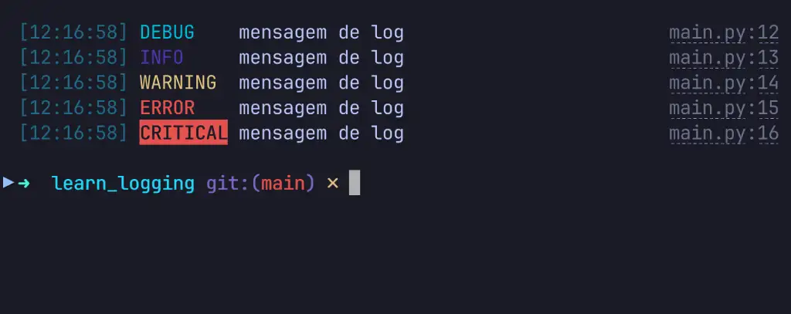

logging no Python: Pare de usar print no lugar errado
Publicado em 05 de julho de 2025 | Por Luiz Otávio Miranda
O logging é o módulo oficial do Python para lidar com
logs de forma estruturada, profissional e extensível. Além disso, ele
serve como uma alternativa muito mais poderosa ao velho e conhecido
print() para debug rápido durante o desenvolvimento.
Enquanto o print() é ótimo pra exibir algo na tela, o
logging te dá controle total sobre o evento que vai ser
registrado, como vai ser formatado e
pra onde essa informação vai (terminal, arquivo,
socket, banco, etc). São funções diferentes entre print e
logging, mas esse comparativo sempre aparece quando
falamos de logging.
Ele também trabalha com níveis de severidade (DEBUG,
INFO, WARNING, ERROR,
CRITICAL), suporta múltiplos formatos, múltiplos destinos
(handlers), hierarquia de loggers e configuração via código ou
arquivos externos.
Em outras palavras: ele foi feito pra log em aplicações
reais. São registros de eventos categorizados para aplicações de gente
grande, que sabe o que está fazendo e sabe que vai precisar debugar e
refatorar o código em algum momento.
O melhor é que já vem com o Python. Sem dependência. Sem gambiarra.
Links úteis para este artigo
Se você caiu nesse artigo de paraquedas, ele é apenas parte de um conteúdo BEM MAIOR. Temos todo esse texto em vídeo no YouTube e também um repositório com todo o código, segue:
Então vamos continuar...
Como o logging funciona por dentro
O sistema de logging do Python é organizado como uma estrutura
hierárquica (em forma de árvore), onde cada logger é um
objeto único identificado por um nome textual (por exemplo:
meuapp, meuapp.api, etc). Essa hierarquia é
definida simplesmente pelo nome, usando pontos (.) para
indicar níveis diferentes.
Exemplo de loggers:
appapp.databaseapp.httpapp.http.requests
Visualmente, a estrutura ficaria assim:
root
└── app
├── database
└── http
└── requests
Essa hierarquia permite algo muito poderoso: a
propagação dos logs. Por padrão, quando um logger
emite um log, essa mensagem sobe na hierarquia até chegar ao logger
pai e, eventualmente, ao logger raiz (root).
Na prática, isso significa que você pode configurar todos os handlers (por exemplo: imprimir no terminal, gravar em arquivos, enviar logs para serviços externos) diretamente no logger raiz.
Assim, todos os loggers filhos automaticamente reutilizam esses handlers, sem precisar configurá-los individualmente toda vez.
Só tem um detalhe importante aqui: algumas bibliotecas também usam loggers internamente, seguindo essa mesma hierarquia de nomes. Por isso, os logs emitidos por essas libs podem acabar sendo capturados pelos seus handlers globais também—desde que o nível configurado permita isso, é claro.
Nota: Se seu app não for grande e cheio de partes independentes, não precisa complicar criando múltiplos loggers e uma hierarquia extensa. Na maioria dos casos, um único logger já resolve tudo.
Nos exemplos a seguir, vamos ver tudo isso funcionando claramente na prática.
Conceitos principais: Loggers, Handlers, Formatters e Filters
O logging é formado por 4 blocos principais:
-
Logger: é quem dispara a mensagem (ex:
logger.info("oi")). - Handler: define pra onde a mensagem vai (terminal, arquivo, e-mail etc).
- Formatter: define como a mensagem vai aparecer (formato da string).
- Filter (opcional): permite filtrar o que será logado.
Esses blocos funcionam como peças de LEGO: você encaixa e combina como quiser.
Pode ter um logger que salva tudo em um arquivo .json,
outro que só mostra ERROR no terminal com cor, outro que
manda INFO pro Telegram (por que não?).
Tudo isso é configurável via código ou por arquivos .ini,
.yaml, .json, como preferir.
Níveis de severidade: level
O nível de severidade (level) aparece em dois momentos
distintos:
- Na configuração do logger e/ou handler.
- Na emissão do log.
A primeira define o que será aceito ou descartado. A segunda define qual a severidade de um log específico.
# 1. Configuração: esse logger aceita logs de WARNING pra cima
logger.setLevel(logging.WARNING)
# ...
# 2. Emissão: esse log será emitido com nível DEBUG
logger.debug("sou um debug")
Como o level funciona?
Tanto loggers quanto handlers possuem um level. Esse
valor determina se uma mensagem será processada ou descartada, com
base em sua severidade.
Os níveis disponíveis são:
-
NOTSETou0– sem configuração explícita. -
DEBUGou10– detalhes técnicos para depuração (tipoprint()). -
INFOou20– informações gerais da execução. -
WARNINGou30– algo inesperado aconteceu, mas foi contornado. -
ERRORou40– erro durante a execução. -
CRITICALou50– erro grave. A aplicação pode parar ou já parou.
Você pode usar os nomes (DEBUG, INFO...) ou
os números diretamente.
O valor numérico importa porque a regra é: um log só será processado se o
leveldesse log for maior ou igual aoleveldo logger e do handler.
Exemplo prático usando level
logger.setLevel(logging.ERROR)
logger.debug("DEBUG") # ignorado
logger.warning("WARNING") # ignorado
logger.error("ERROR") # processado
logger.critical("CRITICAL") # processado
Emissão de um log em um level específico
Para emitir um log, usamos os métodos do logger que correspondem ao nível de severidade desejado:
logger.debug(...)logger.info(...)logger.warning(...)logger.error(...)logger.critical(...)
Exemplo:
# Isso emite um log com nível WARNING (30)
logger.warning("mensagem do meu log")
Neste caso, estamos emitindo uma mensagem com nível 30
(WARNING). Ela será avaliada pelo logger e por cada
handler configurado, e só será processada se passar pelos filtros de
level.
basicConfig: iniciando com logging no código
basicConfig é uma função do módulo logging,
feita para configurar o root logger de forma simples e
rápida. Geralmente, ela será usada em scripts menores para facilitar a
configuração rápida do logging.
Dependendo de quais argumentos forem usados, ela pode configurar
handlers diferentes no
root logger.
StreamHandler: saída para stderr ou stdout
Se você não enviar o argumento filename para
basicConfig, o handler padrão usado será um
StreamHandler.
O termo stream se refere a objetos semelhantes a arquivos, ou
seja, objetos que possuem métodos como .write() e
.flush(). Tanto sys.stdout quanto
sys.stderr são exemplos desses objetos.
Por padrão, o StreamHandler escreve no
stderr. Já o print() padrão do Python
escreve no
stdout. Ou seja: ambos fazem print, mas vão
pra fluxos diferentes.
Nota: É possível trocar o stream da classe
StreamHandler, passando um argumento comosys.stdout, mas isso foge do nosso foco aqui.
Código: basicConfig +
StreamHandler
Primeiro, importamos o módulo logging e definimos o
formato de cada linha de log:
import logging
# Formato do log - veja todos os atributos disponíveis em:
# https://docs.python.org/3/library/logging.html#logrecord-attributes
simple_format = "%(levelname)s|%(name)s|%(asctime)s|%(message)s|%(filename)s|%(lineno)d"
# Isso configura o root logger conforme explico a seguir.
logging.basicConfig(format=simple_format)
O trecho acima faz o seguinte:
-
Cria um
StreamHandlerque envia os logs para ostderr; - Aplica um
Formattercom o formato definido; - Adiciona esse handler ao root logger;
-
Define o nível do root logger como
WARNING(padrão do Python, caso não seja especificado).
Com isso, o root logger já está pronto pra uso. Basta fazer:
# Logando com o root (não vamos usar isso, só exemplo)
logging.warning("Oi!")
Nota: O
basicConfigaceita vários outros argumentos, comolevel,filename,filemode,handlers,streame mais. Se você quiser, pode definir o nível diretamente, por exemplo:level=logging.DEBUG.
getLogger() cria ou acessa nosso próprio
logger
Com o root logger configurado, a gente pode usar a função
getLogger() para criar (ou acessar) nossos próprios
loggers. Essa função tem três comportamentos distintos, dependendo do
argumento:
-
logging.getLogger(): sem argumento, retorna o root logger. -
logging.getLogger("meuapp"): com um nome, cria um novo logger se ainda não existir. -
logging.getLogger("meuapp"): nas próximas chamadas com o mesmo nome, retorna o mesmo logger criado anteriormente (singleton por nome).
Depois de criado, você pode definir o nível de severidade que esse logger vai aceitar:
logger = logging.getLogger("meuapp")
logger.setLevel(logging.DEBUG)
Feito isso, já pode começar a mandar logs e ver tudo aparecendo no terminal:
# Exibe logs com StreamHandler
# debug info warning error critical
logger.debug("mensagem de log")
logger.info("mensagem de log")
logger.warning("mensagem de log")
logger.error("mensagem de log")
logger.critical("mensagem de log")
# Exception
try:
print(1 / 0)
except ZeroDivisionError:
logger.exception("dividiu por zero aí")
Saída esperada:
DEBUG|meuapp|2025-06-29 17:36:09,226|mensagem de log|main.py|24
INFO|meuapp|2025-06-29 17:36:09,226|mensagem de log|main.py|25
WARNING|meuapp|2025-06-29 17:36:09,226|mensagem de log|main.py|26
ERROR|meuapp|2025-06-29 17:36:09,226|mensagem de log|main.py|27
CRITICAL|meuapp|2025-06-29 17:36:09,226|mensagem de log|main.py|28
ERROR|meuapp|2025-06-29 17:36:09,226|dividiu por zero aí|main.py|34
Traceback (most recent call last):
File "main.py", line 32, in <module>
print(1 / 0)
~~^~~
ZeroDivisionError: division by zero
Código completo para basicConfig e
StreamHandler
O código completo ficou assim:
import logging
# Formato para o Formatter
# Veja os atributos disponíveis em:
# https://docs.python.org/3/library/logging.html#logrecord-attributes
simple_format = "%(levelname)s|%(name)s|%(asctime)s|%(message)s|%(filename)s|%(lineno)d"
logging.basicConfig(format=simple_format)
# cria o meu logger "meuapp"
logger = logging.getLogger("meuapp")
logger.setLevel(logging.DEBUG)
logger.debug("mensagem de log")
logger.info("mensagem de log")
logger.warning("mensagem de log")
logger.error("mensagem de log")
logger.critical("mensagem de log")
try:
print(1 / 0)
except ZeroDivisionError:
logger.exception("Alguém tentou dividir por zero aí.")
FileHandler: saída para um arquivo
basicConfig também é capaz de escrever logs em arquivos
mudando levemente os argumentos. Precisamos passar o caminho do
arquivo de log e o modo de abertura desejado para esse arquivo.
Nota: Se você mudar a pasta onde o arquivo deverá ser salvo, essa pasta precisa existir, do contrário terá um erro.
Peguei só o trecho que precisa de modificação no código anterior:
import logging
format1 = "%(levelname)s|%(name)s|%(asctime)s|%(message)s|%(filename)s|%(lineno)d"
# Migrar para arquivo: basta informar o caminho, modo de abertura e encoding.
logging.basicConfig(
level=logging.DEBUG,
format=format1,
filename="log.log",
filemode="a",
encoding="utf-8",
)
# Meu logger -> meuapp (root -> meuapp)
logger = logging.getLogger("meuapp")
# Agora você não verá mais saída no console
logger.debug("Isso deve aparecer no arquivo log.log")
# Arquivo log.log
# DEBUG|meuapp|2025-07-05 10:12:30,311|Isso deve aparecer no arquivo log.log|lesson01.py|20
Ao fazer essa configuração, em vez de usar o
StreamHandler que vimos anteriormente, agora ele usa o
FileHandler. Para esse handler, precisamos do caminho do
arquivo (filename), do modo de abertura
(filemode) e do encoding.
Um ponto importante aqui é que você
não verá mais nada no terminal, porque o nosso
handler agora envia apenas para o arquivo, e não para
stderr ou stdout. Para ver ambos, precisamos
de mais de um handler.
O filemode pode ser qualquer um dos modos de escrita, por
exemplo:
-
a- escreve no final do arquivo (não apaga logs antigos, apenas adiciona) -
w- escreve no começo do arquivo (apaga tudo que estava lá)
basicConfig, FileHandler e StreamHandler
Que tal a gente combinar tudo isso e adicionar dois handlers de uma
vez? Bora ver como usar
FileHandler e StreamHandler junto com a
função basicConfig.
Vou mandar o código completo pra ficar mais fácil de entender.
No exemplo abaixo, a gente cria os dois handlers manualmente e
adiciona eles no logger root via
basicConfig. O resto continua o padrão de sempre.
A propagação (propagate = True) já fica ativa por padrão.
Isso quer dizer que, quando chamamos
algo no nosso logger (que não tem handler nenhum), o log é
propagado para o logger acima dele, no caso, o
root.
Como o root agora tem dois handlers,
os dois são executados quando o nível de severidade
bate. O resultado? Log no terminal e no arquivo ao
mesmo tempo.
Você poderia ter quantos handlers e formatters quisesse, todos
pendurados no root.
import logging
import sys
format1 = "%(levelname)s|%(name)s|%(asctime)s|%(message)s|%(filename)s|%(lineno)d"
# Podemos criar nossos próprios handlers usando as classes que mencionei antes
file_handler = logging.FileHandler(
filename="log.log",
mode="a",
encoding="utf-8",
)
stream_handler = logging.StreamHandler(sys.stdout)
# Nossos handlers precisam de um formatter
main_formatter = logging.Formatter(fmt=format1)
# A configuração do formatter pode ser reutilizada.
file_handler.setFormatter(main_formatter)
stream_handler.setFormatter(main_formatter)
# configura o root logger
logging.basicConfig(handlers=[file_handler, stream_handler])
# cria o meu logger
logger = logging.getLogger("meuapp")
# define o nível do meu log
logger.setLevel(logging.DEBUG)
# Saída nos dois handlers
logger.debug("mensagem de log")
logger.info("mensagem de log")
logger.warning("mensagem de log")
logger.error("mensagem de log")
logger.critical("mensagem de log")
# Exception
try:
print(1 / 0)
except ZeroDivisionError:
logger.exception("Alguém tentou dividir por zero aí.")
A saída do código acima fica como mostro abaixo tanto no console quando no terminal.
DEBUG|meuapp|2025-07-05 10:59:37,842|mensagem de log|lesson05_01.py|41
INFO|meuapp|2025-07-05 10:59:37,842|mensagem de log|lesson05_01.py|42
WARNING|meuapp|2025-07-05 10:59:37,842|mensagem de log|lesson05_01.py|43
ERROR|meuapp|2025-07-05 10:59:37,842|mensagem de log|lesson05_01.py|44
CRITICAL|meuapp|2025-07-05 10:59:37,842|mensagem de log|lesson05_01.py|45
ERROR|meuapp|2025-07-05 10:59:37,843|Alguém tentou dividir por zero aí.|lesson05_01.py|51
Traceback (most recent call last):
File "/Users/luizotavio/Desktop/tutoriais_e_cursos/logging_course_yt/src/logging_course/lesson05_01.py", line 49, in <module>
print(1 / 0)
~~^~~
ZeroDivisionError: division by zero
Hierarquia de Loggers e Handlers
Para unir a teoria à prática que exploramos, e para evitar as
armadilhas mais comuns, vamos entender com precisão o que acontece no
sistema de
logging do Python:
Pontos Fundamentais para Lembrar:
-
basicConfig(): É a função de conveniência que configura orootlogger (o "pai" de todos). Por padrão, ele adiciona umStreamHandler(para o console), umFormatterbásico e define oleveldorootparaWARNING. Em sistemas menores, é tranquilo usar, mas em sistemas maiores usaremosdictConfigque falaremos adiante. -
getLogger('nome'): Cria (ou obtém) umLoggernomeado, que é filho do de outro logger se o nome tiver pontos, comoapp.modulo).rootlogger (ou de outro logger se o nome tiver pontos, comoapp.modulo). -
setLevel(): Usado para definir o nível mínimo de mensagens que umLoggerou umHandlerirá processar. -
Métodos de Log:
debug(),info(),warning(),error()ecritical()são os métodos que você usa em umLoggerpara emitir mensagens com um nível de gravidade específico.
A Grande Sacada: A Propagação e a Filtragem
Esta é a parte crucial e onde a maioria dos materiais simplifica demais. Preste muita atenção aqui!
-
Múltiplos Handlers: Um
Loggerpode ter um ou váriosHandlersanexados a ele. -
Handlers e Formatters: Cada
Handleré responsável por direcionar o log para um destino (console, arquivo, etc.) e sempre usará um únicoFormatterpara definir como a mensagem será exibida. Ele também pode terFilters(que veremos depois) para um controle ainda mais fino. -
Níveis Duplos: Tanto o
Logger(o coletor de logs) quanto oHandler(o publicador de logs) possuem seu própriolevel. Esta é a fonte de possíveis problemas e pode te deixar debugando o própriologgingpor horas.
A Propagação: O Caminho Real do Log (e o Papel dos Handlers)
Quando um log é emitido por um Logger nomeado, ele
percorre uma jornada pela hierarquia. Esse "caminho" pode ser confuso,
porque não é apenas o Logger que está filtrando, os
Handlers
também entram no jogo.
Imagine a hierarquia de loggers assim:
root [root_handler_1, root_handler_2]
└── A [A_handler_1]
└── A.B [B_handler_1, B_handler_2, B_handler_3]
Vamos supor que o level de A.B foi
configurado como INFO (20) e que emitimos:
A.B.warning("Mensagem de Exemplo")
No Logger A.B (o emissor do log)
A primeira filtragem acontece aqui. O log tem level
WARNING (30), e o logger A.B aceita logs com
INFO (20) ou superior. Então a verificação é simples:
level do log >= level do logger → ok
Se passar aqui, segue adiante. Se não passar, o log morre aqui, não chega em nenhum handler.
Nos Handlers de A.B
Agora o log chega nos Handlers do logger
A.B, no exemplo: Bhandler1,
Bhandler2 e Bhandler3.
Cada handler faz sua própria checagem de level. Se o log for aceito, é publicado por aquele handler. Se não, é ignorado por ele (mas ainda pode ser aceito pelos outros handlers ou loggers superiores).
No Logger A (pai de A.B)
Se a propriedade propagate estiver
True (valor padrão), o log
sobe na hierarquia e chega ao logger A.
Mas aqui vem a pegadinha: o level do
logger A não importa mais. Ele
não é checado.
A partir daqui, só os handlers dos loggers pais é que
decidem o que fazer.
Nos Handlers de A
Cada handler de A (ex: Ahandler1)
faz a mesma checagem de sempre:
level do log >= level do handler. Se passar, o log é
publicado.
No Logger root (e seus handlers)
Mais do mesmo: o log chega no logger root, ignora o
level dele, e é analisado apenas pelos handlers
roothandler1 e
roothandler2.
Essa explicação é importante porque muita gente pensa que os loggers pais têm o poder de interromper ou descartar um log que subiu pela propagação. Mas não têm. O único logger com poder de barrar a mensagem é o que emitiu o log.
Se fosse pra resumir num post-it:
O log é verificado no logger que o emitiu. Se passar, é entregue aos seus
handlerse, compropagate = True, sobe para os loggers pais. Mas a partir daí, apenas oshandlersdesses loggers superiores fazem checagem. Os loggers pais não barram mais nada.Se o logger emissor não aceitar o log, acabou o jogo ali. Nada é publicado.
Loggers de terceiros podem entrar no seu log
Se você usar o logging de forma incorreta: tipo deixando
o level do root em DEBUG ou
usando o root como logger principal por algum motivo. Uma
coisa muito comum que costuma ocorrer é você começar a ver logs de
DEBUG de aplicações de terceiros no seu log.
Geralmente queremos logs de libs de terceiros no nosso log, mas não um
milhão de DEBUGs. Talvez apenas de
WARNING para cima, ou até de ERROR para
cima.
Vamos simular e corrigir isso a seguir.
rich: cobaia e nossos logs mais bonitos no console
Vamos usar a biblioteca rich pra deixar os logs do
console mais agradáveis de ler, com cor, syntax highlight e outros
agrados visuais. Só que vamos usar essa lib bem mais adiante no texto.
Mesmo assim, instale-a com o gerenciador que preferir e vamos usar ela mesmo como exemplo de log de terceiros:
# Usando uv
uv add rich
# Ou com pip
pip install rich
Exemplo prático: logs de terceiros no seu log com rich
Vamos configurar o logging novamente, do zero, só que com
root configurado em level
DEBUG (Não recomendado):
import logging
simple_format = "%(levelname)s|%(name)s|%(asctime)s|%(message)s|%(filename)s|%(lineno)d"
# Configura o root logger com:
# - StreamHandler (stderr)
# - Formatter customizado
# - Level DEBUG
logging.basicConfig(format=simple_format, level=logging.DEBUG)
# Cria o nosso logger, mas sem handlers próprios
logger = logging.getLogger("meuapp")
logger.setLevel(logging.DEBUG)
# Apenas um teste
logger.warning("Isso é um teste")
# Saída esperada:
# WARNING|meuapp|2025-07-01 19:44:54,566|Isso é um teste|main.py|14
Agora, vamos simular o uso do rich, que é uma lib que
também usa o módulo logging
internamente. Suponha que você queira imprimir um markdown no
terminal:
from rich import print as rprint
from rich.markdown import Markdown
md = Markdown("# Nos Handlers de A")
rprint(md)
Se algum código interno do rich emitir logs, mesmo que
você não peça, esses logs vão aparecer, porque o
root logger está
aberto no nível DEBUG e
todos os handlers estão lá.
Esse é o tipo de poluição que você pode querer evitar.
Isso era só pra ser um código normal, simulando algo dentro da minha aplicação. Mas olha só o que apareceu no log:
Nota: eu cortei bastante texto do log abaixo, mas dependendo do que você estiver fazendo, pode ficar absurdamente longo. Em alguns casos, aparecem tantos logs que sua aplicação (ou até seu computador) pode travar.
WARNING|meuapp|2025-07-01 20:02:21,221|Isso é um teste|main.py|14
DEBUG|markdown_it.rules_block.code|2025-07-01 20:02:21,271...
DEBUG|markdown_it.rules_block.fence|2025-07-01 20:02:21,271...
DEBUG|markdown_it.rules_block.blockquote|2025-07-01 20:02:21,271...
DEBUG|markdown_it.rules_block.hr|2025-07-01 20:02:21,271...
DEBUG|markdown_it.rules_block.list|2025-07-01 20:02:21,271...
DEBUG|markdown_it.rules_block.reference|2025-07-01 20:02:21,271...
DEBUG|markdown_it.rules_block.html_block|2025-07-01 20:02:21,271...
DEBUG|markdown_it.rules_block.heading|2025-07-01 20:02:21,271...
Qual o problema aqui? Nenhum, se for intencional.
Só aconteceu que a sua aplicação e o rich decidiram
seguir a mesma estratégia: usar o
root
logger pra tudo.
Quando você configura o root com um nível permissivo
(tipo DEBUG), qualquer lib que use o sistema de logging
do Python pode ter suas mensagens
publicadas nos seus handlers, inclusive aquelas que
você nunca pediu pra logar.
Como mencionei antes, é normal querermos logs de libs de terceiros no
nosso log. Elas fazem parte da nossa aplicação, porém, em um nível
interessante, como
WARNING ou ERROR, e acima.
Soluções possíveis para log de libs de terceiros
Tem várias coisas que a gente pode fazer:
-
Subir o
leveldo logger que está causando problema -
Configurar o
rootadequadamente (deWARNINGpara cima) -
Nunca usar o
rootlogger diretamente como logger da sua aplicação -
Isolar o seu logger do
root(não recomendado, mas pode ser útil se está criando uma lib para outras pessoas)
Como subir o level de logs de terceiros com
getLogger?
No próprio log que poluiu meu console e arquivo, a
segunda coluna mostra o nome do logger:
markdown_it!
Muita gente configura seus loggers como mostro a seguir. Isso é até uma recomendação da documentação se eu não estiver enganado:
logger = logging.getLogger(__name__)
Isso cria (ou acessa) um logger com o nome do módulo onde está sendo
executado. Exemplo: se você está em um pacote chamado
learnlogging, e o módulo se chama configlogger.py, o nome do logger será:
-
mainse executar direto -
learnlogging.configloggerse importar de outro lugar
Mas voltando ao problema: se o log vem de markdown_it,
basta fazer:
logging.getLogger("markdown_it").setLevel(logging.INFO)
Geralmente isso silencia o logger que está jogando um
monte de mensagens no seu logger. Mas e se forem muitos? E se forem
todas as 10 libs externas que você está usando num código só? E se as
10 libs que você instalou também usam outras 100 libs? Fica
impraticável.
Meus handlers nos meus loggers
Você pode configurar os
handlers no seu próprio logger. Como estamos usando
basicConfig, os handlers estavam indo pro
root. Agora vamos fazer de outro modo. Só um exemplo:
import logging
# Cria um handler só nosso
stream_handler = logging.StreamHandler()
stream_handler.setLevel(logging.DEBUG)
# Cria um formatter
simple_format = "%(levelname)s|%(name)s|%(asctime)s|%(message)s|%(filename)s|%(lineno)d"
main_formatter = logging.Formatter(fmt=simple_format)
stream_handler.setFormatter(main_formatter)
# CADÊ O ROOT??? sumiu 😎
logger = logging.getLogger("meuapp")
logger.setLevel(logging.DEBUG)
logger.addHandler(stream_handler)
logger.info("mensagem de log")
Pronto. Agora você não verá mais logs do rich ou de
qualquer lib de terceiro. Não porque bloqueamos eles, mas porque não estamos mais ouvindo o root. E como essas libs usam
o root, seus logs vão pra lugar nenhum.
Nota: isso pode ser um problema, visto que libs de terceiros fazem parte da nossa aplicação.
Omitir logs de libs de terceiros é como omitir logs de uma parte do código que realmente vai para produção.
O que eu faria nesse caso, seria manter um handler menos importante no meu próprio logger com level
DEBUG(vejo tudo no meu handler), mas colocaria os handlers importantes, com níveis deWARNINGpara cima, norootpara continuar tendo acesso aos logs de libs de terceiros.Cada caso é um caso a ser estudado.
dictConfig - agora vamos aos negócios
Como mencionei quando comecei o trecho sobre basicConfig,
ela é realmente básica. E o que é mais contraditório nisso tudo, é que
se a sua configuração for levemente mais complexa, ela se torna
extremamente complexa também.
A forma mais completa (e moderna) de configurar o
logging no Python é usando dictConfig.
Como o próprio nome indica, ao invés de ficar configurando tudo solto como quando usamos
basicConfig, com dictConfig podemos montar
toda a configuração usando um único dicionário.
Isso te permite, inclusive, criar arquivos de configuração em outros formatos como JSON ou YAML, e carregar esse arquivo ao subir a aplicação.
Vamos migrar essa configuração para dictConfig:
import logging
file_handler = logging.FileHandler(filename="log.log", mode="a", encoding="utf-8")
stream_handler = logging.StreamHandler()
simple_format = "%(levelname)s|%(name)s|%(asctime)s|%(message)s|%(filename)s|%(lineno)d"
main_formatter = logging.Formatter(fmt=simple_format)
file_handler.setFormatter(main_formatter)
stream_handler.setFormatter(main_formatter)
logging.basicConfig(handlers=[file_handler, stream_handler])
logger = logging.getLogger("meuapp")
logger.setLevel(logging.DEBUG)
logger.debug("mensagem de log")
logger.warning("mensagem de log")
logger.error("mensagem de log")
Aqui temos o seguinte:
-
2 handlers:
FileHandlereStreamHandler - 1 formatter:
Formatter - A configuração do
rootcom os 2 handlers -
A configuração no nosso logger
meuappcomlevelDEBUG
Com dictConfig isso ficaria assim:
import logging
from logging.config import dictConfig
from typing import Any
# Dicionário de Configuração de Logging
# A configuração centralizada para o dictConfig.
LOGGING_CONFIG: dict[str, Any] = {
# Versão da configuração. Sempre 1 por enquanto.
"version": 1,
# 'False' para não desativar loggers de bibliotecas de terceiros.
"disable_existing_loggers": False,
# Aqui vamos configurar o(s) formatter(s)
"formatters": {
# A chave é o nome que você usa para se referir a esse formatter
"main_formatter": {
# As configs são chave: valor no dicionário
# Aqui está nosso formato anterior
"format": "%(levelname)s|%(name)s|%(asctime)s|%(message)s|%(filename)s|%(lineno)d",
},
# Se tiver mais formatters, basta adicionar mais chaves com nomes desejados
},
# Aqui vem os handlers
"handlers": {
# É sempre a mesma ideia, a chave é o nome do handler
"file_handler": {
"class": "logging.FileHandler",
"filename": "log.log",
"mode": "a",
"encoding": "utf-8",
# Perceba o nome do formatter aqui (é a chave que criei lá em formatters)
"formatter": "main_formatter",
"level": "DEBUG",
},
"stream_handler": {
"class": "logging.StreamHandler",
"formatter": "main_formatter",
"level": "DEBUG",
},
},
# Root
# Como o root é especial, tem uma chave só pra ele
# Configuração do logger raiz, que captura todos os logs.
"root": {
# Novamente, estou usando as chaves criadas em handlers
"handlers": ["file_handler", "stream_handler"],
},
# Aqui vem nossos loggers, apesar de que não precisamos disso
# vale te mostrar como funciona
"loggers": {
"meuapp": {
"level": "DEBUG",
},
},
}
dictConfig(LOGGING_CONFIG)
logger = logging.getLogger("meuapp")
logger.debug("mensagem de log")
logger.warning("mensagem de log")
logger.error("mensagem de log")
Não assusta não, se você olhar direitinho só temos isso:
LOGGING_CONFIG: dict[str, Any] = {
"version": 1, # sempre o mesmo valor
"disable_existing_loggers": False, # para mim, sempre o mesmo valor
"formatters": {}, # aqui vem seus formatters
"handlers": {}, # aqui os handlers
"filters": {}, # aqui viriam os filters
"root": {}, # aqui as configurações do root
"loggers": {}, # aqui cada chave é um logger específico
}
As duas primeiras chaves você nem precisa mexer, é sempre o mesmo valor. O restante são palavras que falamos algumas centenas de vezes ao longo desse artigo.
A única coisa que pode soar estranho aqui é a estrutura, porque aqui
você não está criando variáveis, nem está passando atributos, muito
menos instanciando nada. Você só está informando o que você quer e o
logging com a dictConfig que se virem. A
nata da programação declarativa.
Eu vou te passar muitas configurações diferentes ao longo do texto,
mas se estiver com pressa, vai lá na
documentação do Python
para mais detalhes sobre o Dictionary Schema Details.
Handlers padrão em logging.handlers
Caso precise de outros tipos de handlers para SMTP, SOCKET, HTTP e
demais, antes de sair escrevendo suas classes aí, saiba todos handlers
que temos disponíveis em logging.handlers (também alguns
outros espalhados fora desse módulo).
É bem provável que você não precise escrever seu handler do zero. A documentação desses handlers está em Python - logging.handlers - Logging handlers.
Breve resumo de cada handler:
- BaseRotatingHandler É a classe base para handlers que fazem rotação automática de arquivos de log. Você geralmente não usa diretamente, só herda dela pra criar novos handlers que rotacionam logs.
- RotatingFileHandler Grava logs num arquivo e automaticamente cria arquivos novos quando atingem um tamanho definido (por exemplo: 5 MB por arquivo).
- TimedRotatingFileHandler Similar ao anterior, mas aqui a rotação ocorre baseada em intervalos de tempo (ex: diário, semanal, mensal).
- WatchedFileHandler (Unix/Linux) Observa o arquivo de log e, se o arquivo for movido, deletado ou recriado por um processo externo (ex: logrotate), o handler percebe e reabre automaticamente.
- SocketHandler Envia logs via rede usando sockets TCP para um servidor remoto de logs.
- DatagramHandler Semelhante ao SocketHandler, mas usa UDP em vez de TCP. Isso significa que o envio dos logs é mais rápido, porém não confiável.
- SysLogHandler (Linux/macOS) Envia logs diretamente para o syslog do sistema operacional, integrando facilmente com o sistema operacional ou outros serviços que escutam o syslog.
- SMTPHandler Envia logs por e-mail usando SMTP. Comumente usado pra logs críticos (ex: erros inesperados em produção).
- NTEventLogHandler (Windows) Registra logs no Event Viewer (Visualizador de Eventos) do Windows.
- HTTPHandler Envia logs via requisições HTTP para um servidor web externo, útil em integração com APIs ou serviços de log em nuvem.
- BufferingHandler Acumula logs na memória, e só os libera quando o buffer atinge um limite definido. Normalmente não usado diretamente, serve como base para handlers que implementam buffering.
- MemoryHandler Derivado do BufferingHandler, guarda logs na memória até que uma condição (nível crítico ou quantidade máxima) seja atingida. Nesse momento, os logs são repassados para outro handler configurado.
-
QueueHandler Envia logs para uma fila
(
queue.Queue). Ideal para processamento assíncrono de logs, melhorando o desempenho do app principal. - QueueListener Complemento do QueueHandler, escuta logs em uma fila e os despacha para outros handlers configurados. Facilita a implementação de logging assíncrono em aplicações concorrentes.
Handlers diretamente em logging (fora de logging.handlers):
Além desses do módulo logging.handlers, tem alguns
handlers no módulo principal (logging):
-
StreamHandler: Escreve no terminal (
stderroustdout). - FileHandler: Escreve logs diretamente num arquivo sem rotação automática.
- NullHandler: Ignora completamente os logs recebidos, útil pra evitar avisos se nenhum handler tiver configurado.
Não tenho nem como falar sobre todos esses handlers nesse artigo, mas creio que com o que você está aprendendo aqui, não terá dificuldade em implementar nenhum deles para seu caso de uso específico.
RotatingFileHandler e múltiplos StreamHandler via stdout e stderr
Para adicionar um pouquinho mais de complexidade (e utilidade prática!) na nossa configuração, vamos fazer o seguinte:
-
Substituir o
FileHandlerpeloRotatingFileHandler(que rotaciona arquivos automaticamente); -
Criar um
StreamHandlerque envia logs de níveisDEBUGeINFOpara ostdout; -
Criar outro
StreamHandlerque envia logs mais críticos (WARNING,ERROReCRITICAL) para ostderr. - Também vou criar um formatter para cada handlers. Não há necessidade real para isso, mas quero distinção nos três logs, então preciso de três formatters.
Vou quebrar o dicionário em partes porque está ficando extremamente
grande. Vamos trabalhar com as chaves de primeiro nível do
dict: formatters, handlers,
loggers, filters, root, etc.
Só o que mudar.
dictConfig, chave formatters
"formatters": {
"file": {
"format": (
# Os parenteses em strings geralmente é porque é muito longa
# Vamos usar file para os arquivos de log
"%(levelname)s|%(name)s|%(asctime)s|%(message)s|%(filename)s|%(lineno)d"
),
"datefmt": "%Y-%m-%dT%H:%M:%S%z", # Muda o formato da data
},
"stdout": {
# Coloquei um OUT: aqui pra gente conseguir distinguir no log
"format": "OUT: [%(levelname)s] %(message)s",
},
"stderr": {
"format": (
# Coloquei um ERR: aqui pra gente conseguir distinguir no log
# Também coloquei uma cor vermelha aqui.
# Isso não tem a ver com o dict, dictConfig ou o logging
"\033[31mERR: [%(levelname)s] %(message)s - "
"%(filename)s|%(lineno)d\033[0m"
),
},
}
Certo, é bem verboso, mas isso são 3 formatters, do mesmo modo que
fizemos antes, porém em dict.
Os nomes desses formatters são as chaves do dicionário:
file, stdout e stderr.
dictConfig, chave handlers
"handlers": {
"file": {
"class": "logging.handlers.RotatingFileHandler",
"formatter": "file", # LOGGING_CONFIG["formatters"]["file"]
"filename": "log.log", # Arquivo principal do log
"maxBytes": 1024 * 1024 * 5, # Tamanho máximo do log. 5MiB
"backupCount": 5, # Máximo de backups do arquivo de log
"encoding": "utf-8", # Codificação de caracteres do arquivo
},
"stdout": {
"class": "logging.StreamHandler",
"formatter": "stdout", # LOGGING_CONFIG["formatters"]["stream"]
"level": "DEBUG", # 🚨 Isso vai gerar problema (tente entender)
"stream": "ext://sys.stdout", # ext é algo externo ao dict: sys.stdout
},
"stderr": {
"class": "logging.StreamHandler",
"formatter": "stderr", # LOGGING_CONFIG["formatters"]["stream"]
"level": "WARNING",
"stream": "ext://sys.stderr", # ext é algo externo ao dict: sys.stderr
},
},
Os nomes dos handlers são as chaves do dicionário: file,
stdout e stderr. Estou usando o mesmo nome
para handlers e formatters, o que facilita a
organização.
dictConfig, chaves loggers e root
"root": {
"handlers": ["file", "stdout", "stderr"],
},
"loggers": {
"meuapp": {
"level": "DEBUG",
},
},
Pronto, agora foi só adicionar os handlers no logger e finalizamos.
Código completo com dictConfig
Isso fica extremamente verboso, mas depois vamos mover esse dicionário para um arquivo JSON.
import logging
from logging.config import dictConfig
from typing import Any
LOGGING_CONFIG: dict[str, Any] = {
"version": 1,
"disable_existing_loggers": False,
"formatters": {
"file": {
"format": (
"%(levelname)s|%(name)s|%(asctime)s|%(message)s|%(filename)s|%(lineno)d"
),
"datefmt": "%Y-%m-%dT%H:%M:%S%z", # Muda o formato da data
},
"stdout": {
"format": "OUT: [%(levelname)s] %(message)s",
},
"stderr": {
"format": (
"\033[31mERR: [%(levelname)s] %(message)s - "
"%(filename)s|%(lineno)d\033[0m"
),
},
},
"handlers": {
"file": {
"class": "logging.handlers.RotatingFileHandler",
"formatter": "file", # LOGGING_CONFIG["formatters"]["file"]
"filename": "log.log", # Arquivo principal do log
"maxBytes": 1024 * 1024 * 5, # Tamanho máximo do log. 5MiB
"backupCount": 5, # Máximo de backups do arquivo de log
"encoding": "utf-8", # Codificação de caracteres do arquivo
},
"stdout": {
"class": "logging.StreamHandler",
"formatter": "stdout", # LOGGING_CONFIG["formatters"]["stream"]
"level": "DEBUG", # 🚨 Isso vai gerar problema (tente entender)
"stream": "ext://sys.stdout", # ext é algo externo ao dict: sys.stdout
},
"stderr": {
"class": "logging.StreamHandler",
"formatter": "stderr", # LOGGING_CONFIG["formatters"]["stream"]
"level": "WARNING",
"stream": "ext://sys.stderr", # ext é algo externo ao dict: sys.stderr
},
},
"root": {
"handlers": ["file", "stdout", "stderr"],
},
"loggers": {
"meuapp": {
"level": "DEBUG",
},
},
}
dictConfig(LOGGING_CONFIG)
logger = logging.getLogger("meuapp")
logger.debug("mensagem de log")
logger.info("mensagem de log")
logger.warning("mensagem de log")
logger.error("mensagem de log")
logger.critical("mensagem de log")
Eu estava esperando uma saída diferente, mas perceba que os logs estão duplicados:
OUT: [DEBUG] mensagem de log
OUT: [INFO] mensagem de log
OUT: [WARNING] mensagem de log ### <- warning está no stdout
ERR: [WARNING] mensagem de log - main.py|60
OUT: [ERROR] mensagem de log ### <- error está no stdout
ERR: [ERROR] mensagem de log - main.py|61
OUT: [CRITICAL] mensagem de log ### <- critical está no stdout
ERR: [CRITICAL] mensagem de log - main.py|62
Lembra que a ideia era: DEBUG e INFO vão
para o stdout, e WARNING,
ERROR, CRITICAL vão para o
stderr?
O problema está nos níveis configurados. Quando colocamos o handler
stdout com nível DEBUG, isso significa:
"Aceite logs de
DEBUGpara cima"
Ou seja, ele aceita
todos os níveis (DEBUG,
INFO, WARNING, ERROR,
CRITICAL). Por
isso estamos vendo os logs mais graves saindo tanto no
stdout quanto no stderr.
Pra resolver isso, vamos precisar de filters, assim conseguimos controlar com mais precisão quais mensagens vão pra cada handler.
Claro, bora terminar essa parte com estilo e clareza. Aqui vai a continuação ideal pra essa seção:
filters - filtrando logs
filters são adicionados nos handlers ou loggers para
controlar melhor quais mensagens de log devem ser processadas por cada
um. Eles funcionam como um filtro extra, além do
nível mínimo
(level). De forma simplista, é só você imaginar que o
level é um filter que veio pronto, porém é limitado.
O nosso caso anterior é um exemplo clássico: Queríamos que o handler
do stdout exibisse apenas DEBUG e
INFO. Mas como ele estava com nível DEBUG,
ele acabou aceitando todos os níveis acima também, e por isso vimos
WARNING, ERROR e
CRITICAL aparecendo duas vezes (uma vez no
stdout e outra no stderr).
A solução é aplicar um filter que
bloqueie tudo acima de INFO no handler
do stdout.
Criando um filter
Vamos criar um filtro customizado simples. Estou criando outro módulo
chamado filters.py no pacote em que estou
(logging_course).
Para criar o filter, vou criar uma classe que herda de
logging.Filter. O método filter retorna
True se aquele log é permitido ou False se é
para descartar. Estranhamente, não é necessário herdar de
logging.Filter, mas é mais semântico. Qualquer classe que
tenha o método filter vai funcionar. Além disso, o filter
também pode alterar o log e retornar um
LogRecord completamente diferente.
Nota:
LogRecordé o objeto de log com todas as informações daquele log em específico. Toda vez que você emite um log, sua mensagem gera um novoLogRecordque vai ter a data, o módulo, o número da linha, o nível do log, etc.
import logging
class MaxLevelFilter(logging.Filter):
def __init__(self, max_level: str) -> None:
# max_level é um argumento adicional que coloquei
# max_level deve receber o nome do level, mas quero o número
super().__init__()
# self.max_level terá o número do level
self.max_level = logging.getLevelNamesMapping().get(max_level.upper(), 50)
def filter(self, record: logging.LogRecord) -> bool:
# record é o LogRecord que eu disse antes
# record.levelno é o número do level do log
# se o número do level do log for menor ou igual ao max_level que
# definimos no filter o log passa.
# INFO 20 só aceitará logs INFO e DEBUG.
return record.levelno <= self.max_level
Esse filtro aceita apenas mensagens
até o nível informado. Se passarmos
logging.INFO, ele permite DEBUG e
INFO, e bloqueia o resto.
Atualizando o dictConfig com filters
Agora vamos incluir o filtro na nossa configuração:
LOGGING_CONFIG: dict[str, Any] = {
"version": 1, # mesma coisa
"disable_existing_loggers": False, # mesma coisa
# filters é uma chave de primeiro nível,
# assim como formatters
"filters": {
# O nome do meu filtro dentro da dictConfig é a chave
"only_debug_info": {
# Como é uma classe customizada, com argumento personalizado,
# temos que colocar essa chave estranha com parênteses
# O caminho completo do meu filter: logging_course.filters.MaxLevelFilter
"()": "logging_course.filters.MaxLevelFilter",
# Meu argumento adicional com valor INFO
"max_level": "INFO"
}
},
"formatters": {...}, # mesma coisa
# resto tudo a mesma coisa
}
E aplicar esse filtro no handler do stdout:
LOGGING_CONFIG: dict[str, Any] = {
"version": 1, # mesma coisa
"disable_existing_loggers": False, # mesma coisa
"filters": {...}, # vimos acima
"formatters": {...}, # mesma coisa
"handlers": {
"stdout": {
"class": "logging.StreamHandler",
"formatter": "stdout",
"level": "DEBUG",
"filters": ["only_debug_info"], # Poderíamos ter vários filters aqui
"stream": "ext://sys.stdout"
},
# ... os outros handlers são a mesma coisa
},
# ...mesma coisa
}
Resultado final com filter
Com isso, o comportamento será exatamente o que você queria:
OUT: [DEBUG] mensagem de log
OUT: [INFO] mensagem de log
ERR: [WARNING] mensagem de log - main.py|67
ERR: [ERROR] mensagem de log - main.py|68
ERR: [CRITICAL] mensagem de log - main.py|69
Agora sim, stdout correto, stderr correto.
Configuração via JSON (mas aqui a gente vai manter tudo em Python)
Apesar de ser comum externalizar a configuração do
logging usando arquivos .json, nesse artigo
vou manter tudo em Python para facilitar a vida, mas em um cenário
real, é uma maravilha poder configurar tudo via "JSON".
Eu estou usando JSON como exemplo, mas você pode usar qualquer formato que quiser. JSON, YAML,
TOML são bem populares. Outra coisa importante é que o próprio
logging também tem uma configuração chamada
logging.config.fileConfig caso prefira, está tudo na
documentação oficial do Python.
Exemplo de configuração JSON com dictConfig
Vamos criar um arquivo chamado logging.json na raiz do
projeto. Estou criando outra configuração nesse exemplo para encurtar
um pouco o texto (essa não é a melhor configuração, como vimos antes,
mas vai servir). Também vou jogar o único handler que criei dentro do
root.
{
"version": 1,
"disable_existing_loggers": false,
"formatters": {
"default": {
"format": "[%(levelname)s] %(message)s"
}
},
"handlers": {
"console": {
"class": "logging.StreamHandler",
"formatter": "default",
"level": "DEBUG",
"stream": "ext://sys.stdout"
}
},
"root": {
"handlers": ["console"],
"level": "DEBUG"
}
}
Esse DEBUG aí no root chega a dar arrepios.
Carregando a configuração JSON com Python:
import json
import logging.config
with open("logging.json", "r") as f:
config = json.load(f)
logging.config.dictConfig(config)
Observações:
É meio óbvio, mas JSON não é Python (wow, descobriu agora?). Mas
sério, algumas coisas não funcionam exatamente como no Python. Um
exemplo: eu estava usando uma cor com \033[31m e
\033[0m (vermelho e reset). Na hora que o JSON é
carregado, isso tudo é string normal, ou seja, vai aparecer como texto
no seu stdout ou stderr.
Tem como corrigir? Sim, já que você tocou no assunto, vamos criar nosso próprio formatter.
Formatter: que tal criar seu próprio formatter?
Vamos lá, vou criar um formatter só como exemplo para você entender
como funciona. Mas para deixar o nosso console mais
bonito, vou usar o rich no final das contas.
Assim como fiz com filters, vou criar outro arquivo
chamado formatters.py.
import logging
from typing import ClassVar
class ColorFormatter(logging.Formatter):
COLORS: ClassVar[dict[str, str]] = {
"DEBUG": "\033[36m", # Ciano
"INFO": "\033[32m", # Verde
"WARNING": "\033[33m", # Amarelo
"ERROR": "\033[31m", # Vermelho
"CRITICAL": "\033[41m", # Fundo vermelho
}
RESET = "\033[0m"
def format(self, record: logging.LogRecord) -> str:
color = self.COLORS.get(record.levelname, "")
message = super().format(record)
return f"{color}{message}{self.RESET}"
Como usar no JSON com dictConfig
Agora vou voltar a usar a configuração que estou usando enquanto escrevo o artigo só pra te mostrar o tamanho que está ficando meu JSON e também para você ver como ficaria num cenário real.
Esse é o meu JSON nesse momento:
{
"version": 1,
"disable_existing_loggers": false,
"formatters": {
"file": {
"format": "%(levelname)s|%(name)s|%(asctime)s|%(message)s|%(filename)s|%(lineno)d",
"datefmt": "%Y-%m-%dT%H:%M:%S%z"
},
"stdout": {
"format": "OUT: [%(levelname)s] %(message)s"
},
"stderr": {
"format": "ERR: [%(levelname)s] %(message)s - %(filename)s|%(lineno)d"
},
"color": {
"()": "logging_course.formatters.ColorFormatter",
"format": "[%(levelname)s] %(message)s"
}
},
"filters": {
"only_debug_info": {
"()": "logging_course.filters.MaxLevelFilter",
"max_level": "INFO"
}
},
"handlers": {
"file": {
"class": "logging.handlers.RotatingFileHandler",
"formatter": "file",
"filename": "log.log",
"maxBytes": 5242880,
"backupCount": 5,
"encoding": "utf-8"
},
"stdout": {
"class": "logging.StreamHandler",
"formatter": "color",
"level": "DEBUG",
"filters": ["only_debug_info"],
"stream": "ext://sys.stdout"
},
"stderr": {
"class": "logging.StreamHandler",
"formatter": "color",
"level": "WARNING",
"stream": "ext://sys.stderr"
}
},
"root": {
"handlers": ["file", "stdout", "stderr"]
},
"loggers": {
"meuapp": {
"level": "DEBUG"
}
}
}
Se você pegou o jeito da coisa, é a mesma ideia que vimos em
filters (na verdade é a mesma ideia para quase tudo).
Sempre que eu tenho uma classe com interface diferente das classes
padrão do dictConfig, preciso informar o caminho completo
dessa classe no dicionário (ou onde quer quer estiver sua
configuração, JSON no nosso caso). Além disso, tenho que usar
() na chave, assim as chaves que vierem a seguir no JSON
serão passadas para sua classe para configuração.
Resultado:
[DEBUG] mensagem de log <- em ciano
[INFO] mensagem de log <- em verde
[WARNING] mensagem de log <- em amarelo
[ERROR] mensagem de log <- em vermelho
[CRITICAL] mensagem de log <- fundo vermelho
Se quiser deixar isso ainda mais modular depois, pode mover os códigos
ANSI pra uma constante global ou até gerar dinamicamente por tema. Mas
isso é suficiente por agora, porque nem vamos usar isso, usaremos o
rich. Como falei isso umas 30 vezes no texto, vamos ver
como fazer isso.
RichHandler - o Logging Handler do rich
rich tem sido extensivamente usado com o Python para
aplicações de terminal mais elegantes, coloridas e bonitas. E não é
por menos: tem praticamente tudo o que você precisaria em termos de
componentes visuais para terminal,
incluindo um handler para logging.
Para usar, basta fazer o seguinte na no seu arquivo de configuração JSON ou no dicionário mesmo.
{
"version": 1,
"disable_existing_loggers": false,
"formatters": {
"stdout": {
"datefmt": "[%X]"
}
},
"handlers": {
"stdout": {
"()": "rich.logging.RichHandler",
"level": "DEBUG",
"omit_repeated_times": false,
"formatter": "stdout"
}
},
"root": {
"handlers": ["stdout"]
},
"loggers": {
"meuapp": {
"level": "DEBUG"
}
}
}
Só de fazer isso, meu log ficou como mostro na imagem a seguir. Por
padrão o RichHandler emit os logs para
stdout.

Se quiser, pode manter o rich para o seu
debug. E daqui em diante, toda vez que pensar em ver o
valor de uma variável ou algo semelhante, use o log. Deixa o
print para coisas que realmente precisam de print, como
exibir algo par ao usuário mesmo.
JSON log formatter: vamos salvar logs em JSON Lines?
Só pra constar: você também pode criar seu próprio formatter e mudar o formato de saída para o que achar melhor. Vamos fazer isso em JSON porque é um dos formatos mais usados, mas você decide qual usar. A ideia é sempre a mesma.
Na real, em vez do JSON tradicional, vamos usar uma variação chamada JSON Lines (ou NDJSON, Newline Delimited JSON). Nesse formato, cada linha é um objeto JSON independente.
O motivo é simples: eficiência. Quando a gente cria um JSON comum, você precisa guardar tudo num único objeto (ou array). A cada novo log, teria que carregar esse JSON, adicionar o novo item, e depois salvar tudo de novo.
Com JSONL, não. Podemos simplesmente dar um
append (a) no final do arquivo, sem precisar
mexer em nada que já estava lá.
E o melhor: fazer parse disso é fácil. Basta ler o
arquivo linha por linha e interpretar cada uma como um JSON separado.
Até porque, convenhamos: não é todo dia que você vai fazer parse de logs. Mas gravar logs... isso sim, é todo dia.
Também vamos melhorar o nosso setup de leve até chegarmos
a uma configuração final pronta.
Melhorando nosso setup geral do logging
Até o momento, temos trabalhado com uma configuração toda solta. O ideal é movermos as partes da nossa configuração para uma função. Então vamos fazer o seguinte (veja nos comentários de código):
# Criei uma arquivo separado apenas para configurações
# src/logging_course/config_logger.py
import json
import logging
from logging.config import dictConfig
from pathlib import Path
from typing import Any
# Caminhos em geral
ROOT_DIR = Path(".") # Raiz do projeto
LOGS_DIR = ROOT_DIR / "logs" # Pasta para logs (./logs)
LOG_CONFIG_PATH = ROOT_DIR / "logging.json" # Arquivo de configuração
def setup(logger_name: str) -> logging.Logger:
"""Configura o logger principal da aplicação."""
# Se a pasta LOGS_DIR não existir, teremos um erro na aplicação,
# então verificamos e, se não existir, criamos.
if not LOGS_DIR.is_dir():
LOGS_DIR.mkdir(parents=True, exist_ok=True)
with LOG_CONFIG_PATH.open(encoding="utf8") as file:
logging_config = json.load(file)
dictConfig(logging_config)
# Já estou retornando um logger, mas nem precisaria disso
return logging.getLogger(logger_name)
A única diferença do que fizemos anteriormente é que agora você tem uma função encapsulando tudo.
Além disso, quero jogar os arquivos de log na pasta
logs para evitar ficar poluindo a raiz do meu projeto. Se
essa pasta não existir, isso vai parar a aplicação logo quando
logging for tentar salvar o arquivo de log. Se quiser
tirar esse trecho de código da nossa função, não tem problema, basta
criar a pasta logs manualmente.
Formatter personalizado: JSONLoggerFormatter
Existem libs prontas para isso, mas como estamos aqui para aprender, vamos criar nosso próprio logger.
# src/logging_course/formatters.py
import json
import logging
from datetime import UTC, datetime
from typing import Any, ClassVar, override
# Essas são as chaves disponíveis no LogRecord
# Podemos incluir qualquer uma dessas chaves no nosso log.
LOG_RECORD_KEYS = [
"name",
"msg",
"args",
"levelname",
"levelno",
"pathname",
"filename",
"module",
"exc_info",
"exc_text",
"stack_info",
"lineno",
"funcName",
"created",
"msecs",
"relativeCreated",
"thread",
"threadName",
"processName",
"process",
"taskName",
]
# Só fiz isso para separar o que é padrão do que é meu mesmo
# message não existe em no LogRecord
LOG_RECORDS_EXTENDED_KEYS = [*LOG_RECORD_KEYS, "message"]
# Nosso logger herda de logging.Formatter. Vou configurar tudo dessa super
# classe por dentro do meu __init__, ou seja, não vou receber configurações
# externas.
# A única coisa que adicionei aqui foi include_keys, que vamos poder usar para
# ativar ou desativar chaves do nosso log.
class JSONLogFormatter(logging.Formatter):
def __init__(self, include_keys: list[str] | None = None) -> None:
super().__init__(
fmt=None,
datefmt="%Y-%m-%dT%H:%M:%S%z",
style="%",
validate=False,
)
# Se você não enviar include_keys, todas as chaves serão adicionadas.
self.include_keys = (
include_keys if include_keys is not None else LOG_RECORDS_EXTENDED_KEYS
)
@override
def format(self, record: logging.LogRecord) -> str:
# Crio um dicionário onde obtenho todas as chaves de "include_keys"
# de dentro do LogRecord (record). Inicialmente, os valores são
# iguais, mas alguns desses valores não podem ser serializados para JSON.
dict_record: dict[str, Any] = {
key: getattr(record, key)
for key in self.include_keys
if getattr(record, key, None) is not None
and key in LOG_RECORDS_EXTENDED_KEYS
}
if "created" in dict_record:
# Sobrescrevi o método formatTime para retornar um datetime
# ao invés de struct_time que é o padrão. Assim consigo trabalhar
# com timezone.
dict_record["created"] = self.formatTime(record)
if "message" in self.include_keys:
dict_record["message"] = record.getMessage()
if "exc_info" in dict_record and record.exc_info:
# exc_info traz informações sobre exceções. Precisamos formatar
# esse valor para uma string. Por sorte isso existe em Formatter.
dict_record["exc_info"] = self.formatException(record.exc_info)
if "stack_info" in dict_record and record.stack_info:
# Aqui também precisamos formatar o valor do stack da exceção para str.
dict_record["stack_info"] = self.formatStack(record.stack_info)
# Caso utilize extras ao emitir o log
# Ex.: logger.warning("Mensagem", extra={"contexto": "qualquer coisa"})
# A chave "contexto" será adicionada ao log também
for key, val in vars(record).items():
if key in LOG_RECORDS_EXTENDED_KEYS:
# Essas chaves nós tratamos antes
continue
# Adicionamos a chave extra ao log
dict_record[key] = val
# E pronto, salvamos o log como JSON.
# Aqui só estamos retornando, quem salva mesmo é RotatingFileHandler.
return json.dumps(dict_record, default=str)
@override
def formatTime(self, record: logging.LogRecord, datefmt: str | None = None) -> str:
# Como disse nos comentários acima, só estou trocando o timestamp
# para datetime para ter timezone. Configure como preferir.
date = datetime.fromtimestamp(record.created, tz=UTC)
if datefmt:
return date.strftime(datefmt)
return date.isoformat()
Não deixe de ler os comentários que deixei nos códigos. Eu estou deixando de escrever texto puro aqui para comentar nas linhas onde as coisas realmente acontece para você entender melhor.
Agora só falta configurarmos o nosso logging.json ou o
seu dicionário do dictConfig.
Configuração atual do nosso logging.json do dictConfig
Agora vamos usar dois handlers que aprendemos antes, o
RichHandler para o nosso console e o
RotatingFileHandler para o JSONLogFormatter.
Você sabe fazer isso, vamos lá:
{
"version": 1,
"disable_existing_loggers": false,
"formatters": {
"console": {
"format": "%(message)s",
"datefmt": "%H:%M:%S"
},
"json": {
"()": "logging_course.formatters.JSONLogFormatter",
"include_keys": [
"created",
"message",
"levelname",
"name",
"filename",
"module",
"exc_info",
"lineno",
"threadName",
"processName",
"taskName",
"args"
]
}
},
"handlers": {
"console": {
"class": "rich.logging.RichHandler",
"formatter": "console",
"level": "DEBUG",
"rich_tracebacks": false,
"tracebacks_show_locals": false,
"show_time": true,
"show_level": true,
"omit_repeated_times": false,
"markup": true,
"enable_link_path": true,
"show_path": true
},
"file": {
"class": "logging.handlers.RotatingFileHandler",
"level": "DEBUG",
"formatter": "json",
"filename": "logs/log.jsonl",
"maxBytes": 5242880,
"backupCount": 5,
"encoding": "utf-8"
}
},
"root": {
"handlers": ["file", "console"]
},
"loggers": {
"meuapp": {
"level": "DEBUG"
}
}
}
Pronto, agora temos dois logs prontos para uso em uma tacada só. Sai
no seu terminal e vai para o arquivo .jsonl.
Bônus: um parser simples para JSONL
Aqui está como fazer o parse do arquivo .jsonl como
exemplo:
def parse_jsonl(path: Path) -> list[dict[str, Any]]:
with path.open("r", encoding="utf8") as file:
lines = file.readlines()
logs: list[dict[str, Any]] = []
if not lines:
return logs
for line in lines:
logs.append(json.loads(line))
return logs
if __name__ == "__main__":
from rich import print as p
log_file = LOGS_DIR / "log.jsonl"
for log in parse_jsonl(log_file):
# This is just an example
p(log)
Estamos acabando. Vamos ver só mais uma coisa que eu acho que você vai achar interessante.
QueueHandler e QueueListener: log sem travar sua aplicação
Às vezes, o seu logger pode virar um gargalo na aplicação. Isso mesmo. A função que deveria te ajudar a debugar começa a travar tudo. Por quê?
Imagine isso:
logger.info("Processando pedido: %s", pedido)
Parece inocente, mas se esse log for:
-
Formatado com um
formattermais pesado (ex: JSON complexo) - Escrito em disco (arquivo grande, I/O lento)
-
Impresso no terminal com renderização colorida
(
RichHandler) - Enviado para múltiplos
handlersao mesmo tempo - Enviando por e-mail, HTTP, Socket, etc
... então essa linha pode virar um mini-freio toda vez que roda. E se sua app roda centenas ou milhares de logs por segundo (ex: scraping, filas, web, workers), esse tempo se acumula.
A solução: enfileirar o log e deixar outra thread cuidar deles
É exatamente isso que QueueHandler e
QueueListener fazem.
Você passa a responsabilidade de processar e gravar o log para outra thread, usando uma (fila).
Assim, sua aplicação:
- Só coloca o log na fila (
QueueHandlerfaz isso) - E continua rodando normal, sem esperar
-
Enquanto isso, outra thread (
QueueListener) fica escutando essa fila e processa os logs em segundo plano.
Por que isso funciona tão bem?
Porque queue.Queue() em Python é
thread-safe e super leve. Você consegue colocar o log
na fila em microssegundos. A thread que escuta a fila
(QueueListener) processa os logs no tempo que precisar,
totalmente separada da thread principal da sua aplicação.
Exemplo prático com nosso JSON de dictConfig
Para implementar isso, vamos adicionar uma nova seção ou entrada no
seu dictConfig. Ao configurar um
QueueHandler, você também informará quais são os
"handlers reais" que o QueueListener (que funcionará em
uma thread separada) deve usar para processar as mensagens de log
retiradas da fila. Basicamente:
-
Definimos um
QueueHandlerque será o ponto de entrada dos logs na fila. -
Dentro da configuração desse
QueueHandlernodictConfig(ou em uma seçãoqueue_listeners), você indica oshandlerspara onde oQueueListenerdeve enviar os logs. -
Então, qualquer
loggerque você queira que se beneficie do processamento assíncrono, você o associa a esteQueueHandler. Por exemplo, você pode mover os handlers que estavam norootlogger (ou em qualquer outro logger específico) para serem manipulados pelo seuQueueHandler.
No meu caso, vou usar no root logger.
{
"version": 1,
"disable_existing_loggers": false,
"formatters": {
"console": {
"format": "%(message)s",
"datefmt": "%H:%M:%S"
},
"json": {
"()": "logging_course.formatters.JSONLogFormatter",
"include_keys": [
"created",
"message",
"levelname",
"name",
"filename",
"module",
"exc_info",
"lineno",
"threadName",
"processName",
"taskName",
"args"
]
}
},
"handlers": {
"console": {
"class": "rich.logging.RichHandler",
"formatter": "console",
"level": "DEBUG",
"rich_tracebacks": false,
"tracebacks_show_locals": false,
"show_time": true,
"show_level": true,
"omit_repeated_times": false,
"markup": true,
"enable_link_path": true,
"show_path": true
},
"file": {
"class": "logging.handlers.RotatingFileHandler",
"level": "DEBUG",
"formatter": "json",
"filename": "logs/log.jsonl",
"maxBytes": 5242880,
"backupCount": 5,
"encoding": "utf-8"
},
"queue": {
"class": "logging.handlers.QueueHandler",
"handlers": ["file", "console"],
"respect_handler_level": true
}
},
"root": {
"handlers": ["queue"]
},
"loggers": {
"meuapp": {
"level": "DEBUG"
}
}
}
Certo, a configuração está pronta, mas se você executou o código,
provavelmente percebeu que os logs pararam de funcionar. Isso acontece
porque, embora tenhamos configurado o QueueHandler para
colocar os logs na fila,
ninguém está lendo essa fila ainda!
Lembra que o nosso objetivo é ter o QueueHandler para
enfileirar os logs (tirando o peso da sua aplicação)
e, em paralelo, o QueueListener para
processar esses logs em outra thread. A configuração
do dictConfig que acabamos de ver define o
QueueHandler e informa para onde o
QueueListener deve enviar os logs.
Agora, precisamos explicitamente iniciar o
QueueListener para que ele comece a consumir as mensagens
da fila e as encaminhe para os handlers "file" e
"console".
Para que o sistema de log baseado em filas realmente funcione, precisamos dar a partida no
QueueListener. Lembre-se, o
QueueHandler apenas coloca os logs na fila; o
QueueListener é quem lê e processa.
Precisamos fazer isso programaticamente, após aplicar a configuração
do dictConfig. Geralmente, este código é adicionado logo
após a chamada para logging.config.dictConfig() (ou
fileConfig()).
Exemplo para iniciar o QueueListener:
import logging
import logging.config
import atexit
# A função getHandlerByName() está disponível a partir do Python 3.12.
queue_handler = logging.getHandlerByName("queue")
if queue_handler is not None:
# O QueueHandler, quando configurado via dictConfig com "handlers",
# automaticamente cria e gerencia uma instância de QueueListener.
# Nós simplesmente precisamos iniciar essa instância.
queue_handler.listener.start()
# É crucial registrar uma função para parar o listener quando o programa
# for encerrado. Isso garante um desligamento limpo da thread do listener.
atexit.register(queue_handler.listener.stop)
Meu código final e completo
Fizemos muitas coisas ao longo desse artigo, mas temos que finalizar em algum lugar, concorda?
Então vou te passar como ficou a minha configuração final com alguns ajustes que fiz. Sinta-se à vontade para usar e modificar como quiser.
Para amarrar tudo, aqui está a versão final da sua função
setup no módulo config_logger (na verdade,
estou mandando o módulo inteiro, então tem mais do que só
setup aí). Mudei ela levemente para incluir a lógica de
inicialização e desligamento do QueueListener.
Note que esta função setup agora é apenas para
configurar o logger, sem criar ou retornar instâncias
de logger. Você precisará usar
logging.getLogger('nome') em outras partes da sua
aplicação para obter e usar os loggers configurados.
import atexit
import json
import logging
from logging.config import dictConfig
from pathlib import Path
from typing import Any
# Caminhos em geral
ROOT_DIR = Path(".") # Raiz do projeto
LOGS_DIR = ROOT_DIR / "logs" # Pasta para logs (./logs)
LOG_CONFIG_PATH = ROOT_DIR / "logging.json" # Arquivo de configuração
# não preciso mais de name como argumento aqui
def setup() -> None:
"""Configura o logger principal da aplicação."""
# Se a pasta LOGS_DIR não existir, teremos um erro na aplicação,
# então verificamos e, se não existir, criamos.
if not LOGS_DIR.is_dir():
LOGS_DIR.mkdir(parents=True, exist_ok=True)
with LOG_CONFIG_PATH.open(encoding="utf8") as file:
logging_config = json.load(file)
dictConfig(logging_config)
# Aqui está o que adicionamos para iniciar e finalizar QueueListener
queue_handler = logging.getHandlerByName("queue")
if queue_handler is not None:
# pyright não reconheceu os tipos
queue_handler.listener.start() # pyright: ignore
atexit.register(queue_handler.listener.stop) # pyright: ignore
# sem retorno
def parse_jsonl(path: Path) -> list[dict[str, Any]]:
with path.open("r", encoding="utf8") as file:
lines = file.readlines()
logs: list[dict[str, Any]] = []
if not lines:
return logs
for line in lines:
logs.append(json.loads(line))
return logs
if __name__ == "__main__":
from rich import print as p
log_file = LOGS_DIR / "log.jsonl"
for log in parse_jsonl(log_file):
# This is just an example
p(log)
O nosso JSON que funciona como configuração principal da
dictConfig ficou dessa forma (não devo ter mudado nada
nele):
{
"version": 1,
"disable_existing_loggers": false,
"formatters": {
"console": {
"format": "%(message)s",
"datefmt": "%H:%M:%S"
},
"json": {
"()": "logging_course.formatters.JSONLogFormatter",
"include_keys": [
"created",
"message",
"levelname",
"name",
"filename",
"module",
"exc_info",
"lineno",
"threadName",
"processName",
"taskName",
"args"
]
}
},
"handlers": {
"console": {
"class": "rich.logging.RichHandler",
"formatter": "console",
"level": "DEBUG",
"rich_tracebacks": false,
"tracebacks_show_locals": false,
"show_time": true,
"show_level": true,
"omit_repeated_times": false,
"markup": true,
"enable_link_path": true,
"show_path": true
},
"file": {
"class": "logging.handlers.RotatingFileHandler",
"level": "DEBUG",
"formatter": "json",
"filename": "logs/log.jsonl",
"maxBytes": 5242880,
"backupCount": 5,
"encoding": "utf-8"
},
"queue": {
"class": "logging.handlers.QueueHandler",
"handlers": ["file", "console"],
"respect_handler_level": true
}
},
"root": {
"handlers": ["queue"]
},
"loggers": {
"meuapp": {
"level": "DEBUG"
}
}
}
Em qualquer parte da aplicação, eu estava testando as nossas configurações com o seguinte código:
import logging
from logging_course import config_logger
if __name__ == "__main__":
config_logger.setup()
logger = logging.getLogger("meuapp")
logger.debug("mensagem")
logger.debug("Olá %s %s", "Luiz", "Otávio", extra={"contexto": "qualquer coisa"})
logger.info("mensagem")
logger.info("Olá %s %s", "Luiz", "Otávio", extra={"contexto": "qualquer coisa"})
logger.warning("mensagem")
logger.warning("Olá %s %s", "Luiz", "Otávio", extra={"contexto": "qualquer coisa"})
logger.error("mensagem")
logger.error("Olá %s %s", "Luiz", "Otávio", extra={"contexto": "qualquer coisa"})
logger.critical("mensagem")
logger.critical("Olá %s %s", "Luiz", "Otávio", extra={"contexto": "qualquer coisa"})
try:
print(1 / 0)
except ZeroDivisionError:
logger.exception("Deu ruim")
logger.exception(
"Olá %s %s", "Luiz", "Otávio", extra={"contexto": "qualquer coisa"}
)
logger.exception("Deu ruim", stack_info=True)
logger.exception(
"Olá %s %s",
"Luiz",
"Otávio",
extra={"contexto": "qualquer coisa"},
stack_info=True,
)
print("Testando blocking")
print("Esses prints são independentes do log.")
print("Podem aparecer aleatóriamente no topo, meio ou final dos logs.")
Boas Práticas no Logging do Python: e agora? - Aula 13
Parabéns!
Você chegou ao final do nosso curso
(e do texto, se estiver apenas lendo). A gente poderia continuar
falando sobre logging por horas, mas agora você já deixou o
print() pra trás, entendeu Handlers, Formatters, Filtros,
dictConfig, JSON e até logging assíncrono com
QueueHandler.
Você tem um poder enorme nas mãos. Mas agora vem as perguntas mais importantes: Onde e como usar esse poder? O que vale a pena registrar? Como escrever uma mensagem de log que ainda faça sentido daqui a 6 meses, às 3 da manhã, quando um bug crítico estourar em produção?
Nesta última aula, o foco muda um pouco. Vamos falar menos sobre como configurar e mais sobre por que logar, o que logar e quando usar cada nível. Vamos explorar as boas práticas que separam um log amador de um log profissional, e que podem realmente salvar sua pele quando tudo estiver pegando fogo.
Ah, e vale lembrar: isso aqui não tem fim. Sempre tem mais pra aprender. Erros em logs acontecem até nas maiores empresas do mundo, então continue estudando, melhorando, revisando seus logs... e evitando que eles virem uma armadilha.
Para Quem Você Está Escrevendo o Log?
Antes de mais nada: log não é só pra você, desenvolvedor. Na verdade, o que deve ser registrado em log geralmente não é decidido apenas pelos devs. Em ambientes profissionais, outros setores também dependem desses dados.
Claro, como dev, você provavelmente vai usar debug,
info, warning,error,
critical e exception para entender o
comportamento do seu código. Mas a empresa como um todo precisa de
muito mais:
- O usuário criou uma conta
- O usuário fez login
- Visualizou o produto X
- Comprou o produto Y
- Pesquisou por "banana orgânica"
Tudo isso pode parecer irrelevante para debugging técnico, mas para outras áreas, esses logs são ouro em forma de texto. Gente de marketing, produto, segurança, auditoria... todos querem (e precisam) ver esses eventos.
Então,
antes de sair logando tudo no debug, entenda o propósito do log. Você está logando para
debug ou para outro setor? Se é para outro setor, quais dados eles
precisam? Esses dados podem ser salvos? São sensíveis?
Veja alguns exemplos genéricos:
- Logs para Desenvolvedores (Você do Futuro): Foco em debugging. Informações que ajudam a entender o fluxo da aplicação, o estado de variáveis e a causa de um bug (não é só debug, todos os níveis de log podem ser relevantes aqui).
- Logs para SysAdmins / SRE / DevOps (Monitoramento): Foco em saúde do sistema. Logs sobre falhas, lentidão, uso de recursos, quedas de serviço, etc.
- Logs para o Negócio / Auditoria (Análise): Foco em rastrear ações importantes do ponto de vista do negócio. Exemplo: "Usuário X comprou produto Y", "Relatório Z foi gerado" (claro, você precisa se comunicar com outros setores para saber o que logar).
- Logs para fins legais? Se um usuário da sua aplicação fizer algo ilegal, talvez a justiça queira saber o que aconteceu. Aqui entra outro tipo de responsabilidade: retenção de logs, dados sensíveis, LGPD, etc. Consulte um advogado (ou o jurídico da empresa) para saber o que pode ou não ser armazenado.
Decifrando os Níveis de Severidade na Prática
Agora sim: vamos entender quando usar cada nível de log na prática. Abaixo você encontra a descrição de cada nível com exemplos concretos, tanto de situações quanto de código.
DEBUG: "Esse é nosso (dos devs)"
- Quando usar: Para diagnóstico detalhado durante o desenvolvimento ou debugging intenso.
- O que logar: Variáveis internas, payloads de API, queries SQL, entrada e saída de funções complexas.
- Regra: Geralmente desativado em produção para evitar excesso de ruído (e vazamento de dados sensíveis da aplicação).
# Cuidado com isso, payload pode conter dados sensíveis da aplicação
# e do usuário
logger.debug("Iniciando função de login com payload: %s", payload)
# Cuidado novamente (nem preciso falar de novo né?)
logger.debug("Consulta SQL gerada: %s", query)
INFO: Aconteceu algo certo
- Quando usar: Para registrar eventos normais e esperados no fluxo da aplicação.
- O que logar: Login de usuário, criação de conta, execução bem-sucedida de uma tarefa.
# Sem senhas, pelo amor de Deus
logger.info("Usuário %s logou com sucesso", username)
logger.info("Relatório gerado e enviado por email")
WARNING: Atenção, algo inesperado aconteceu
- Quando usar: Quando algo não saiu como o esperado, mas a aplicação conseguiu se recuperar.
- O que logar: Funcionalidades obsoletas, API lenta, falha com fallback, tentativa de reconexão, muitas tentativas de login, etc...
logger.warning("API externa demorou %d segundos para responder", elapsed)
logger.warning("Configuração 'X' está obsoleta. Use 'Y' no lugar.")
ERROR: Uma operação falhou
- Quando usar: Quando uma tarefa específica não pôde ser concluída, mas a aplicação continua rodando.
- O que logar: Falha de validação, erro ao salvar no banco, exceção tratada que impediu o sucesso da operação, etc.
logger.error("Erro ao salvar usuário no banco: %s", user_id)
logger.error("Falha ao processar pagamento: %s", str(error))
CRITICAL: O navio está afundando!
- Quando usar: Para falhas graves que impedem o funcionamento da aplicação.
- O que logar: Perda de conexão com o banco após várias tentativas, falha na inicialização de componente essencial, falha na rede interna, etc.
logger.critical("Banco de dados inacessível após 5 tentativas. Encerrando aplicação.")
logger.critical("Arquivo de configuração principal está corrompido.")
Menção honrosa: logger.exception()
-
Quando usar: Sempre que você estiver dentro de um
bloco
try...excepté interessante logar a exceção na maioria dos casos. -
Vantagem: Além de logar como
error, ele inclui automaticamente o traceback. Isso é ouro puro para debugging.
try:
resultado = processar_pagamento()
except Exception as e:
logger.exception("Erro inesperado ao processar pagamento")
Com esses exemplos em mente, você já consegue diferenciar claramente o papel de cada nível de severidade e aplicar isso com consciência. O importante é manter consistência, clareza e foco em quem vai ler o log depois, muitas vezes, esse alguém vai ser você mesmo (só que com sono e pressa).
Além disso, como o que aprendemos sobre loggers,
handlers e filters, você conseguirá separar
bem os logs por pacote, módulo, por setor da empresa, ou como
preferir. Também conseguirá filtrar dados desnecessários em logs
específicos.
As Regras de Ouro de uma Boa Mensagem de Log
Depois de tudo que aprendemos sobre configuração e níveis de log, chegou a hora da pergunta mais importante:
Como escrever uma mensagem de log que realmente ajuda?
Aqui vão 3 regras de ouro, simples, mas poderosas, que separam logs descartáveis de logs profissionais e confiáveis.
Regra 1: Escreva logs para máquinas também, não só para humanos
Sim, logs precisam ser legíveis. Mas eles também devem ser estruturados e processáveis por ferramentas de observabilidade, buscas e alertas.
Evite logs "misteriosos" e difíceis de analisar com código.
#🚫 Ruim:
logger.error("Erro no usuário 123")
# ✅ Bom:
logger.error("Falha na atualização do perfil", extra={
"user_id": 123,
"reason": "email_invalido"
})
Com logs estruturados (em JSON, como fizemos), você pode filtrar todos
os erros por
reason=emailinvalido, ou agrupar por userid. Isso é impossível com strings soltas e mal
formatadas.
Regra 2: Contexto é rei
A mensagem "Falhou" pode ser verdade, mas não ajuda em
nada. Um bom log responde:
Quem? O quê? Onde? Quando? Por quê?
Inclua IDs relevantes (de usuário, pedido, transação, etc). Quanto mais contexto você der, mais rápido será o diagnóstico, inclusive por outras pessoas do time (ou você no futuro, com pressa e sem paciência). Evite também colocar coisas desnecessárias no log (falo disso adiante).
# 🚫 Ruim:
logger.error("Pagamento não foi processado")
# ✅ Bom:
logger.error("Erro ao processar pagamento", extra={
"user_id": 42,
"order_id": 101,
"gateway": "Stripe",
"error_code": "card_declined"
})
Regra 3: NUNCA logue informações sensíveis
Isso é mais do que uma boa prática: é uma questão legal e de segurança.
O que nunca deve aparecer em logs:
- Senhas (óbvio, né?)
- Tokens de autenticação ou sessão
- Chaves de API
- Números de cartão de crédito
- Documentos como CPF, RG, etc.
- Endereços físicos de clientes, colaboradores, fornecedores, etc.
- Dados médicos ou sensíveis (LGPD/GDPR)
Dica técnica: Se você precisa logar objetos que podem conter
dados sensíveis (ex: um User ou um Request),
crie uma função de serialização segura, ou use um
Filter para limpar ou mascarar os dados antes de
enviar ao log.
Regra 4: Contexto é bom… até virar poluição
Sim, na Regra 2 eu disse que contexto é rei. Mas cuidado pra não transformar o seu log num romance de 800 páginas com final inconclusivo. Logar dados demais é tão ruim quanto logar de menos.
- Vai deixar os arquivos gigantes
- Vai dificultar buscas e análise
- Pode até esconder o que realmente importa
- Vai ficar caro
- Tem mais coisa ruim que não lembrei...
Ruído esconde o sinal.
Veja um exemplo de poluição:
# 🚫 Ruim:
logger.debug("Resposta completa da API: %s", response.text) # 1000 linhas de HTML
logger.info("Usuário fez login", extra={
"user_id": 1,
"nome": "Fulano",
"email": "fulano@email.com", # dado sensível
"cpf": "123.456.789-00", # dado sensível
"endereco": "Rua tal, nº tal, bairro tal", # dado sensível
"navegador": "Chrome 126",
"sistema": "macOS",
"resolução": "1920x1080",
"timestamp": "2025-07-10T15:34:21Z"
})
Melhor seria algo como:
# ✅ melhor - é o mesmo log, mas eu consigo usar o ID do usuário para fazer
# buscas internas no sistema.
logger.info("Login realizado com sucesso", extra={
"user_id": 1 # Com o ID do usuário você consegue buscar outros dados
})
Regra prática: Logue apenas o que alguém precisa saber para agir. Se o dado não ajuda a entender, resolver ou monitorar o problema, talvez ele não precise estar ali. Geralmente, IDs que identificam algo são suficientes para fazer uma busca interna no sistema sem expor dados sensíveis em logs.
Lembre-se que quando você não precisa de logs, eles são "lixo" e até inconvenientes. Em algum momento alguém pode esquecer algo e vazar logs da sua aplicação. Se isso acontecer, torça muito para não ter nenhum dado sensível no meio dos dados vazados.
Concluindo
Se você chegou até aqui, parabéns. De verdade.
Você saiu do print() e agora tem um
arsenal completo de logging profissional nas mãos:
Handlers, Formatters, Filters, JSON, dictConfig, logs
assíncronos com QueueHandler, e, mais importante,
boas práticas de uso.
Você entendeu que logging não é só sobre escrever mensagens no console. É sobre observabilidade, diagnóstico rápido, comunicação entre times, segurança e até compliance legal. Ou seja: logging bem feito salva seu código, sua sanidade e, às vezes, até o faturamento da empresa.
E agora, o que fazer com esse conhecimento?
Use. Refatore seus projetos. Melhore os logs do seu time. Mostre esse
curso pra alguém que ainda vive no print().
E quando for criar algo novo… lembra disso: um bom log não é ruído. É música pros ouvidos de quem tá tentando resolver um bug às 3 da manhã.
Valeu demais por acompanhar até aqui! Se você curtiu, compartilha, vai lá no vídeo e comenta, salva, manda pra galera. E se quiser aprender mais Python moderno, CLI, automações, ou IA aplicada ao mundo real, dá uma olhada nas outras playlists do canal ou nos cursos completos.
Nos vemos nos próximos vídeos ou textos.
Abraço!
Se quiser, esse texto está em markdown e pode ser baixado aqui. Você também rolou bastante essa página né? Volte para o topo ou simplesmente vá para nossa página inicial.